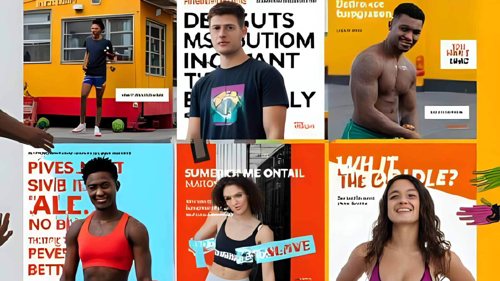

Proyectos Destacados

Rebranding de marca
Rediseño con enfoque moderno y emocional.
Animación Digital
Secuencia ilustrada para campaña juvenil.

Post Instagram
Contenido gráfico para redes sociales.
Diseñadora Gráfica
Creatividad joven con propósito
Hola, soy Brisa Perea Alamo, Soy Brisa Perea Alamo, tengo 20 años y actualmente curso la carrera de Diseño Gráfico Empresarial en la Universidad César Vallejo. Desde muy joven descubrí mi pasión por el arte y la comunicación visual, lo que me llevó a explorar cómo el diseño puede convertirse en una herramienta poderosa para conectar a las marcas con las personas.
Me especializo en desarrollar propuestas gráficas que no solo sean estéticamente atractivas, sino que también respondan a objetivos estratégicos y comunicativos. Me inspira crear soluciones visuales que comuniquen con claridad, emoción y propósito, ya sea a través de un rebranding, una campaña digital, piezas editoriales o animaciones. Considero que el diseño debe tener alma, por eso me esfuerzo en que cada proyecto refleje identidad, coherencia y un mensaje auténtico. Trabajo con sensibilidad visual, pero también con pensamiento analítico, combinando creatividad con una visión empresarial. Estoy en constante aprendizaje y crecimiento, motivada por los desafíos que cada nuevo proyecto me presenta. Mi meta es seguir diseñando con intención, dejando huella a través de ideas que inspiren y conecten.
Me especializo en:
Rediseño con enfoque moderno y emocional.
Secuencia ilustrada para campaña juvenil.
Contenido gráfico para redes sociales.
¿Te gustaría colaborar o tienes alguna idea? ¡Hablemos!